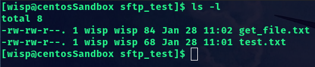
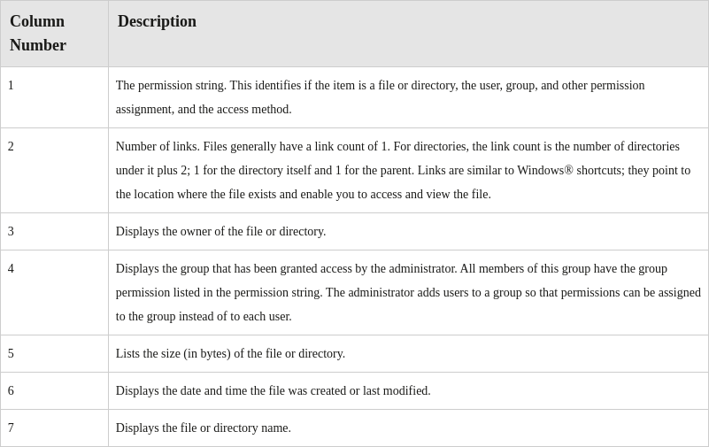

Permissions
Permissions are access rights assigned to users, which enable them to access of modify certain files and directories. Permissions can be set at different levels and for different access contexts. They enable you to configure who is allowed to access an object, and who is restricted from accessing that object. Controlling access through permissions mitigates risk by ensuring that users are only able to access what they need to get their job done, and no more.
The ls -l Command
The
ls -l command gives you a long list of the files and directories in your current working directory. Each item in the list contains seven columns, three of which display permission information. The contents of the columns are described in the following table.
